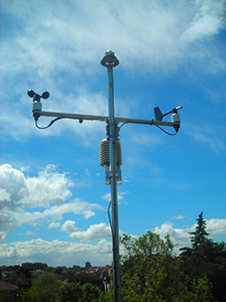
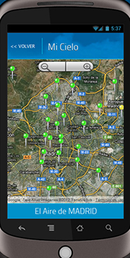

11 Mayo 2015, Madrid, EspañaMedio ambiente y eficiencia energética, Calidad del aire, Ciudades inteligentes, Medio ambiente
Mantenimiento y explotación del Sistema Integral de Vigilancia, Predicción e Información de la Calidad del Aire del Ayuntamiento de Madrid
SICE ha prorrogado por un año más este contrato, que lleva desarrollando ininterrumpidamente desde el año 2010.
En este proyecto, SICE se encarga principalmente del mantenimiento y explotación del sistema Integral de vigilancia, predicción e Información de la calidad del aire con las que cuenta el Ayuntamiento. El servicio consiste en la realización de las siguientes tareas de mantenimiento y gestión de redes de calidad del aire y el mantenimiento y reparación de equipos e instalaciones eléctricas y electrónicas de las 25 estaciones de la red de vigilancia, 1 unidad móvil, 105 equipos analizadores y 45 sensores de medición.
También está previsto que se lleve a cabo los servicios de gestión del proyecto con elaboración de informes, información al público a través de la página web, captura de información por medios electrónicos, informáticos y telemáticos y desarrollo y mantenimiento de programas de ordenador, así como como el mantenimiento de equipos informáticos y de telecomunicaciones.
 

{kind=link}